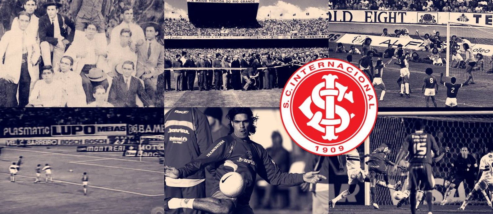

HISTÓRIA
Para ver a história do Sport Clube Internacional, clique na imagem abaixo.
NOTÍCIAS
Para ver as notícias do Sport Clube Internacional, clique na imagem abaixo.
TÍTULOS
Para ver os títulos do Sport Clube Internacional, clique na imagem abaixo.